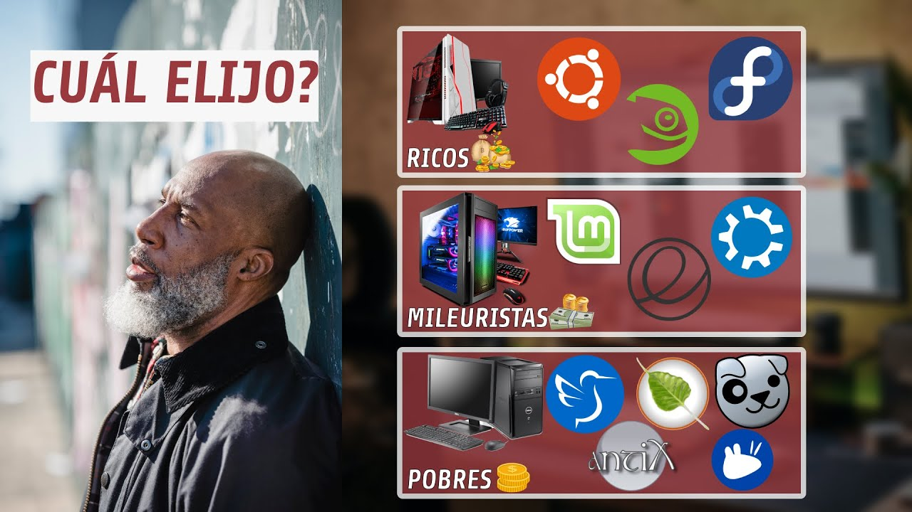
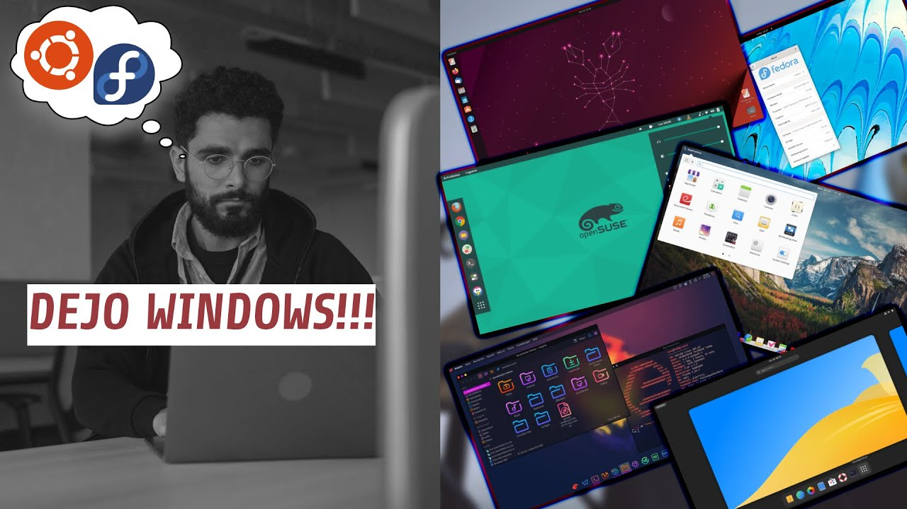
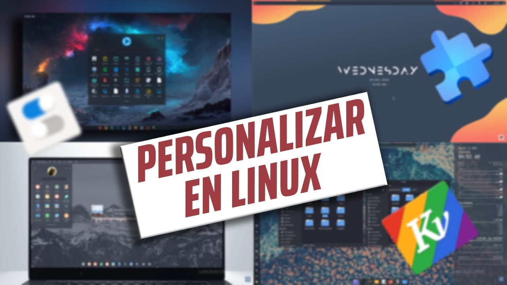
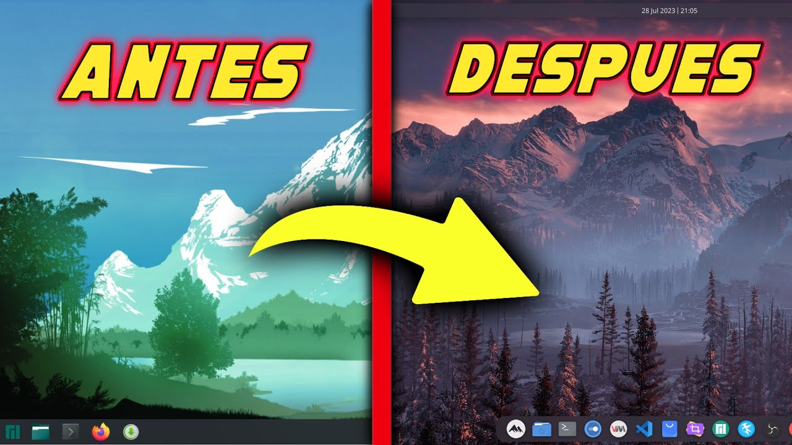
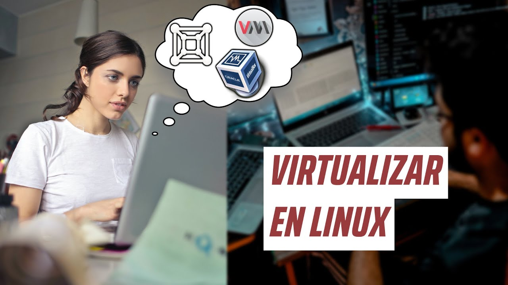

Este video explora el fascinante mundo de
Linux y sus
alternativas a software propietario. Descubre cómo el
sistema operativo de código abierto ofrece opciones
innovadoras y poderosas frente a las soluciones privativas,
proporcionando libertad y flexibilidad a los usuarios.
¡Acompáñanos en esta exploración hacia un mundo de
alternativas creativas en el universo Linux!
Adéntrate en la increíble comunidad de
Linux y descubre cómo el poder del código abierto impulsa un
ecosistema colaborativo. Este video destaca la fuerza de la
comunidad Linux y su incomparable soporte. Desde foros
apasionados hasta contribuciones directas, exploraremos cómo
la comunidad Linux crea un ambiente de aprendizaje,
resolución de problemas y crecimiento conjunto. Únete a
nosotros mientras exploramos el corazón de Linux: su gente y
su sólido respaldo comunitario.

¿Te sientes abrumado al elegir una
distribución Linux para tu hardware? Este video te guiará a
través del proceso de selección, destacando consideraciones
clave para adaptar la elección de tu distro a las
capacidades de tu hardware. Desde distribuciones ligeras
para sistemas más antiguos hasta opciones robustas para
hardware de última generación, descubrirás cómo tomar
decisiones informadas para optimizar el rendimiento de tu
sistema. ¡Acompáñanos en este viaje para encontrar la distro
perfecta que se ajuste a tu hardware y necesidades!

Explora el fascinante universo de las
distribuciones Linux adaptadas a diferentes tipos de
usuarios y profesiones. En este video, analizaremos cómo
elegir la distro ideal según tu nivel de experiencia, ya
seas un principiante entusiasta o un usuario avanzado en
busca de desafíos más profundos. Además, descubrirás
distribuciones diseñadas específicamente para profesiones
como desarrollo, diseño gráfico, programación y más. Únete a
nosotros mientras desglosamos las opciones y te ayudamos a
encontrar la distribución Linux perfecta que se alinee con
tus habilidades y necesidades profesionales.
Embárcate en un recorrido visual por los
diversos entornos de escritorio que Linux tiene para
ofrecer. En este video, exploraremos las diferencias entre
entornos populares como GNOME, KDE, XFCE, Mate y muchos más.
Descubre la estética, la funcionalidad y las características
únicas que cada entorno aporta a la experiencia de usuario.
Ya sea que busques elegancia, rendimiento o una
personalización extrema, te guiaremos a través de las
opciones para ayudarte a encontrar el entorno de escritorio
perfecto que se adapte a tu estilo y preferencias.
¡Acompáñanos mientras destapamos el mundo visual de los
entornos de escritorio en el vasto universo Linux!

Sumérgete en el emocionante arte de la
personalización en el mundo Linux. En este video,
exploraremos las infinitas posibilidades que este sistema
operativo de código abierto ofrece para adaptar cada aspecto
de tu experiencia digital. Desde temas y fondos de pantalla
hasta configuraciones avanzadas de ventanas y barras de
herramientas, descubrirás cómo darle vida a tu escritorio de
una manera que refleje tu estilo único. Únete a nosotros en
este viaje de creatividad y aprendizaje, y descubre cómo la
personalización en Linux no es solo una característica,
¡sino una forma de expresión!

¡Bienvenido a un fascinante tutorial
sobre la personalización de Manjaro Linux! En este video, te
guiaré paso a paso a través de las herramientas y opciones
disponibles para darle a tu instalación de Manjaro un toque
personal único. Desde la selección de temas y fondos de
pantalla
hasta la configuración de tu entorno de escritorio,
aprenderás
cómo transformar tu experiencia en Manjaro para que se
adapte
perfectamente a tus gustos y preferencias. ¡Prepárate para
descubrir la belleza de la personalización en Manjaro y
hacer
que tu escritorio sea verdaderamente tuyo!

Explora las ventajas emocionantes de
virtualizar en Linux, especialmente con opciones de
hipervisor tipo 1 gratuitas que aceleran tu experiencia. En
este video, descubriremos cómo el sistema operativo Linux se
convierte en el terreno ideal para virtualización,
aprovechando hipervisores de tipo 1 para proporcionar un
rendimiento excepcional. Desde la flexibilidad hasta la
eficiencia, exploraremos cómo la virtualización en Linux te
brinda un control total sobre tus máquinas virtuales.
Prepárate para descubrir cómo puedes llevar tu experiencia
de virtualización al siguiente nivel de velocidad y
versatilidad con las opciones gratuitas disponibles.